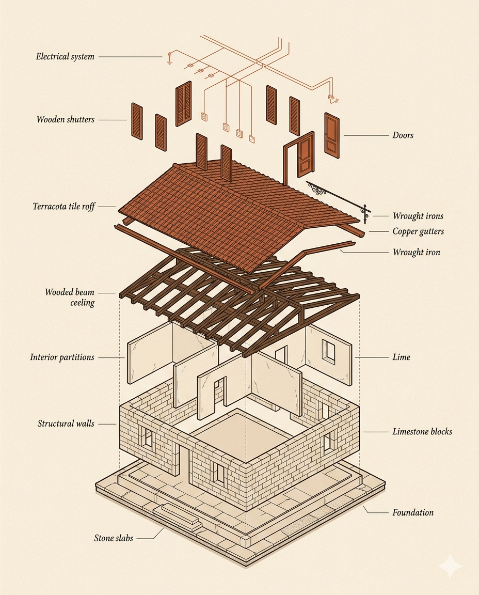

— Profilo 01
Sei un investitore?
ROI prevedibile, tempi certi, capex bloccato. Per chi compra per rivendere o mettere a reddito.
→
Trasformiamo immobili in Toscana con prezzo bloccato, tempi garantiti e qualità documentata. Un unico interlocutore dal sopralluogo alla consegna delle chiavi.
Non claim. Impegni contrattualizzati. Costituiscono il fil rouge che attraversa ogni preventivo, ogni cantiere, ogni comunicazione del marchio.
Il preventivo che firmi è il prezzo finale. Nessun extra a fine cantiere salvo varianti richieste e approvate per iscritto da te. Le sorprese di costo, semplicemente, non esistono nel nostro modello.
Cronoprogramma vincolante con data di consegna certa. Penali contrattuali in caso di ritardo non giustificato. La certezza temporale è la vera valuta di chi investe o vive il progetto.
Materiali tracciati, lavorazioni documentate fase per fase, garanzia decennale postuma di legge. Ogni intervento è auditabile. La fiducia non si chiede: si dimostra.

Il Rinascimento è una metodologia, non una nostalgia.
Bellezza tramite metodo.
Toscan Costruzioni nasce dall'incontro tra la tradizione costruttiva toscana e i sistemi di project management contemporanei. Esistiamo per dimostrare che efficienza e bellezza non sono in conflitto.
Conserviamo ciò che ha valore. Mai contro l'immobile, sempre con l'immobile. La Toscana non è un fondale: è patrimonio che si tramanda.
Industrializziamo i processi senza industrializzare l'estetica. Tempi industriali, cure artigianali. Velocità senza scorciatoie.
Documentazione fotografica per fase, certificazioni materiali, garanzie scritte. Niente promesse, solo prove.
Tu firmi un contratto. Noi gestiamo trenta fornitori. Tu ricevi un report settimanale. Noi gestiamo cento decisioni operative.
Visita gratuita e analisi tecnica dell'immobile.
Render, computo metrico, cronoprogramma vincolante.
Prezzo bloccato e firma del contratto.
Lavori monitorati con report settimanale.
Verifiche tecniche e documentazione completa.
Consegna e garanzia decennale postuma.
Ogni profilo legge solo la sua parte. Lessico, priorità, numeri calibrati su chi sei e cosa cerchi.
ROI prevedibile, tempi certi, capex bloccato. Per chi compra per rivendere o mettere a reddito.
Trasformiamo l'unità in macchina da reddito. Layout ottimizzati, estetica fotografabile, materiali resistenti al turnover.
Bonus fiscali, prezzo certo e zero stress. Per chi vivrà nell'immobile con la propria famiglia.
Custodia del patrimonio, sartorialità d'eccellenza. Per ville storiche e casali di pregio.
Full English service. Project management remoto, weekly reports, complete bureaucratic compliance.
Il sopralluogo è gratuito. In 48 ore una prima valutazione tecnica ed economica del tuo progetto.
Le ristrutturazioni in Italia godono di un sistema di detrazioni e agevolazioni che, se gestito correttamente, può ridurre il costo netto dal 30% al 65%. Toscan Costruzioni include la pre-valutazione fiscale nel servizio.
Detrazione IRPEF base sugli interventi di ristrutturazione edilizia. La misura più stabile e applicabile.
Detrazione su interventi di riqualificazione energetica: cappotto, caldaia, infissi, schermature.
Per interventi di adeguamento antisismico in zone classificate 1, 2 e 3.
Collegato alla ristrutturazione: detrazione su mobili e grandi elettrodomestici dell'unità ristrutturata.
Sistemazione di aree verdi, terrazze, giardini, impianti di irrigazione.
Interventi di abbattimento delle barriere e accessibilità dell'immobile.
Sede operativa a Firenze. La nostra rete logistica e i fornitori di fiducia coprono le principali zone del territorio toscano con tempi di intervento certi.
Centro storico UNESCO, restauri conservativi, appartamenti d'epoca. Provincia con comuni di pregio: Montespertoli, Greve, San Casciano, Fiesole.
Ville storiche, casali rurali, fattorie e tenute. Il nostro progetto pilota — Villa Claudia — si sviluppa qui, a Montespertoli.
Borghi medievali, casali rurali, vincoli paesaggistici. Recupero di cascine e palazzi storici nei centri minori.
Ville liberty della costa, case coloniche dell'entroterra. Progetti per affitti brevi e seconde case.
Casali di campagna, fattorie, immobili rurali. Spesso con cambio di destinazione d'uso e valorizzazione.
Tenute, ville al mare, ex case coloniche. Sartorialità con materiali tradizionali: cotto, pietra, legno.
Una villa storica nel cuore del Chianti fiorentino. Il primo progetto in cui Rispetto Storico, Ottimizzazione del Ciclo e Qualità Documentata si incontreranno in cantiere — e definiranno il nostro standard.

Montespertoli · Chianti fiorentino · 2026
Una villa storica nel Chianti DOCG suddivisa in 8 quote da €298.000. Ogni quota include 4 settimane di usufrutto personale all'anno e reddito passivo per le restanti 48, gestito da Prestige Living Srl. Il valore di tre proprietà in una sola quota.
Toscan Costruzioni è il general contractor responsabile dell'intero ciclo di intervento, dalle pratiche edilizie alla consegna delle chiavi.
Articoli, guide fiscali e approfondimenti tecnici per chi vuole capire davvero il processo prima di firmare.


Pronti a costruire qualcosa di duraturo?
Il sopralluogo è gratuito. In 48 ore avrai una prima valutazione tecnica ed economica del tuo progetto, senza impegno.